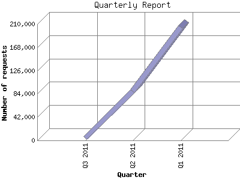

Analog 5.1
Analog 5.1 Report Magic 2.21
Report Magic 2.21The Quarterly Report shows total activity on your site for each quarter of a
year. Remember that each page hit can result in several server requests as the
images for each page are loaded.
Note: Most likely, the first and
last quarters will not represent a complete quarter's worth of data, resulting
in lower hits.

| Quarter | Number of requests | Number of page requests | |
|---|---|---|---|
| 1. | Q1 2011 | 204,491 | 4,117 |
| 2. | Q2 2011 | 88,429 | 6,397 |
| 3. | Q3 2011 | 4,765 | 131 |
Most active quarter Q2 2011 : 6,397 pages sent. 204,491 requests handled.
Quarterly average: 3,548 pages sent. 99,228 requests handled.
This report was generated on July 5, 2011 19:23.
Report time frame January 1, 2011 08:39 to July 5, 2011 23:59.
| Web statistics report produced by: | |
| Analog 5.1 | Report Magic 2.21 |